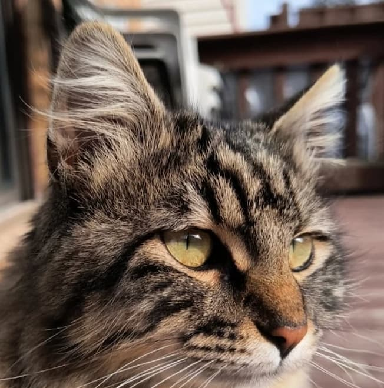

My name is Sanya Safi, a Muslim Pakistani American residing in the suburbs of Chicago. I did my undergrad in Applied Psychology from the Univeristy of Illinois at Chicago. From the time that I graduated from UIC and beginning my Master's, I took a handful of courses through my local community college and Coursera on Web and UI/UX Design. Currently I am working at a non profit organization that focuses on educating the adult Muslim on youth mental health disorders. In my free time, I have begu to work on making my crochet hobby into a side hustle and you can find our Instagram page here :Loop to Loop Crochet. Other than that, I spend my time making sure the stray cats in my neighborhood are well and fed. 
I have a couple of career goals. One is that I want to be able to land a job in the Web Design or UI/UX field. I find this field to be very interesting and I love how there are options for work from home. The other career that I have is to make my crochet business into something I could live off of.
I am a person who tends to pick up hobbies like they are flowers and, like flowers, some of the hobbies wither and cease to exisit in my life. Some have shown great resilience and have stayed around in some way or another.